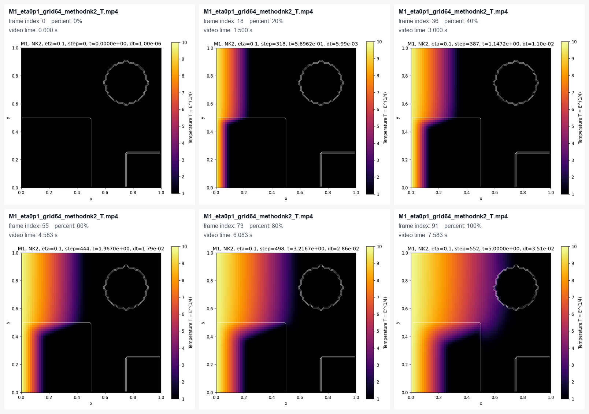
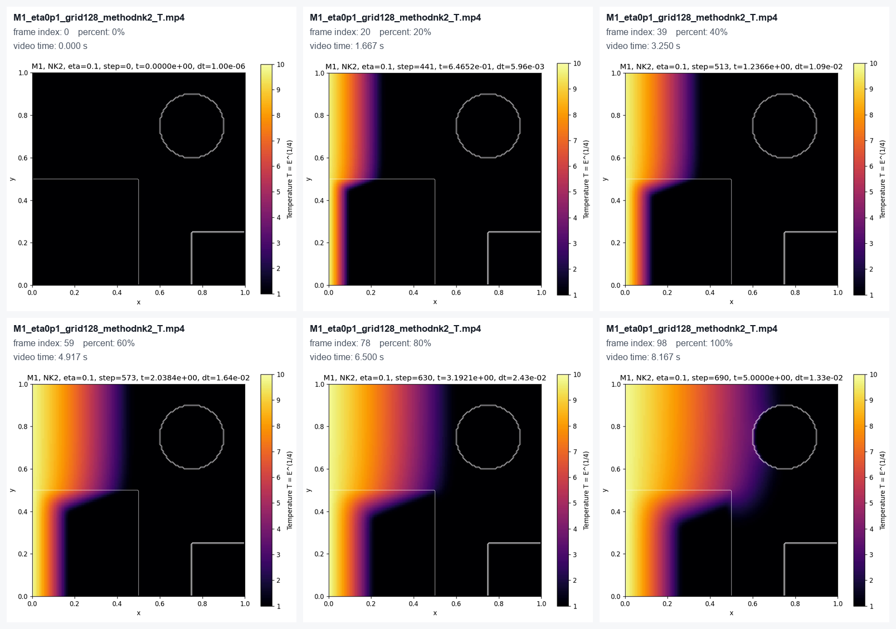
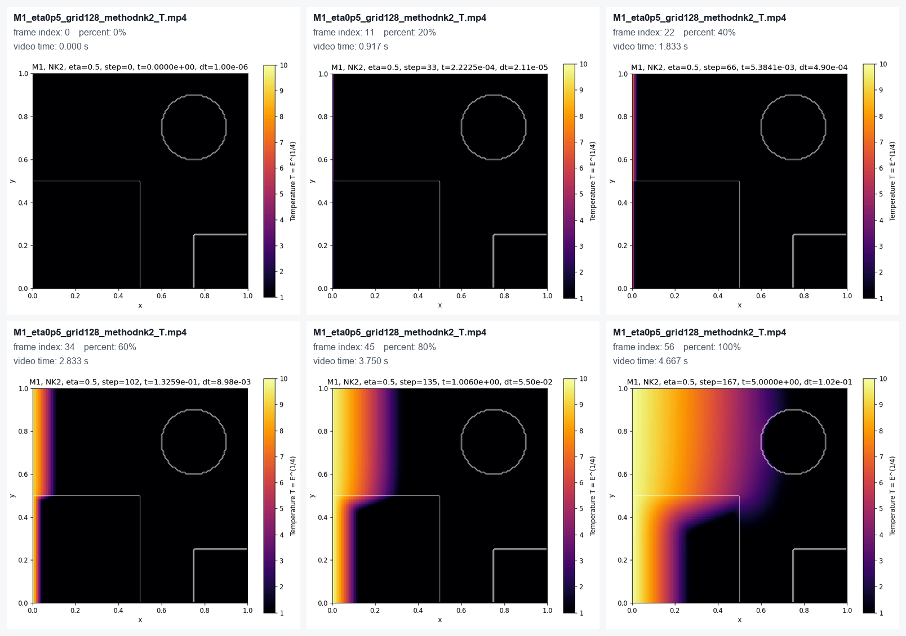
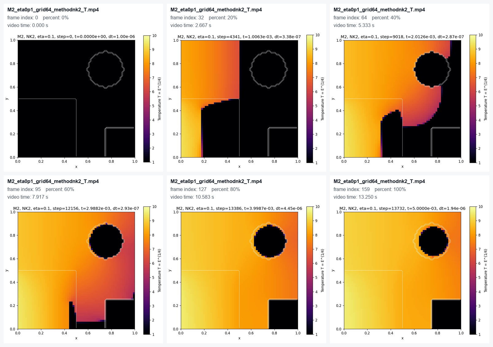
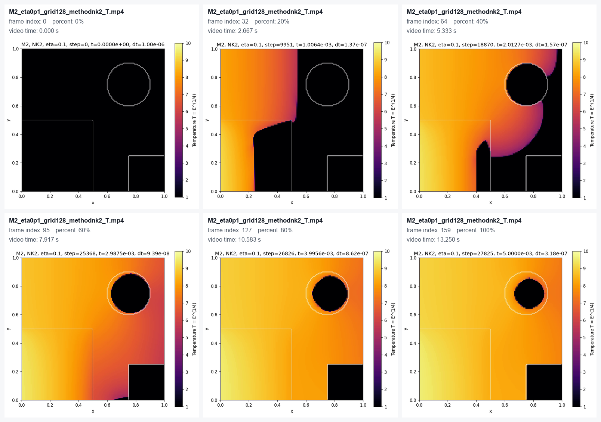
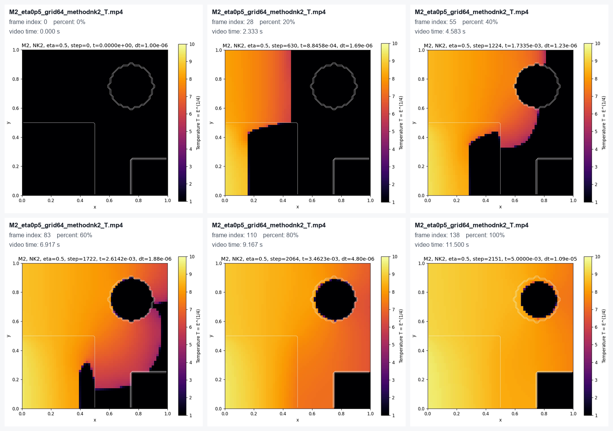
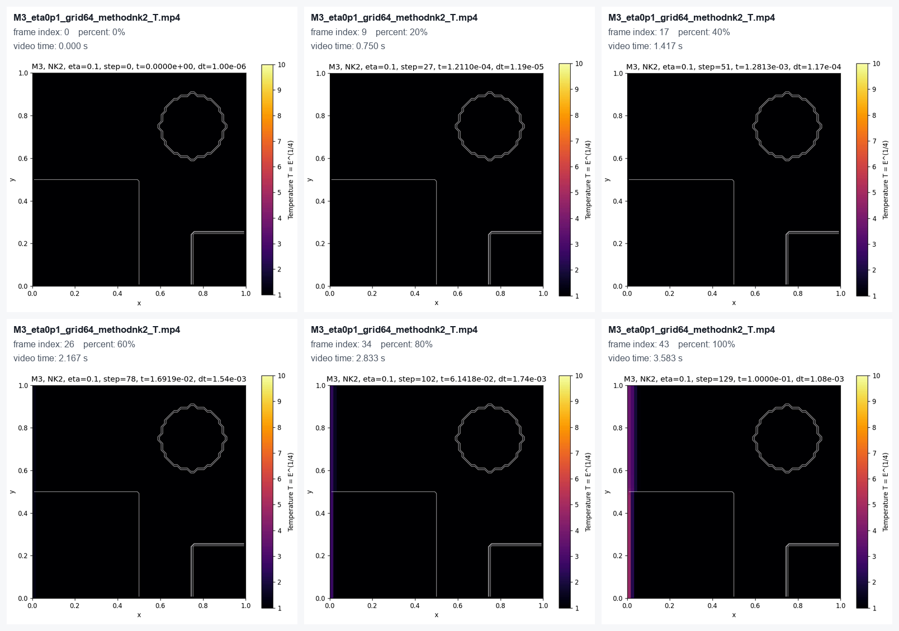
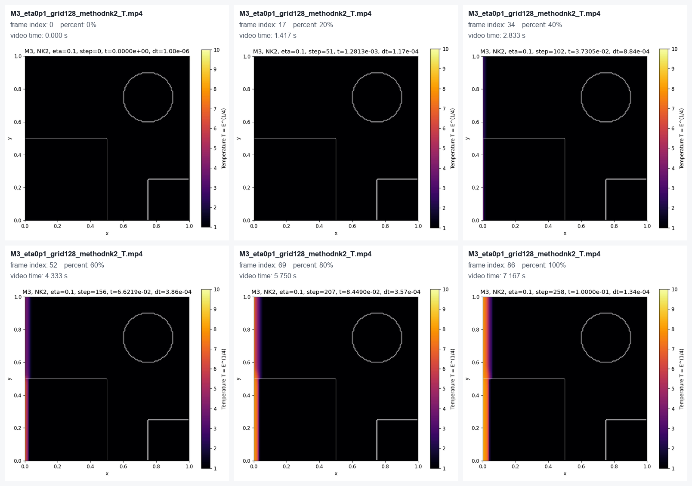
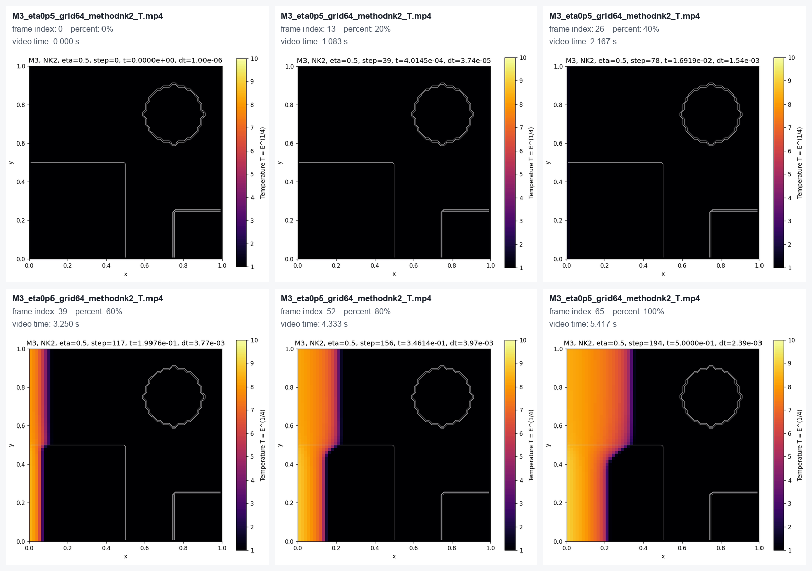
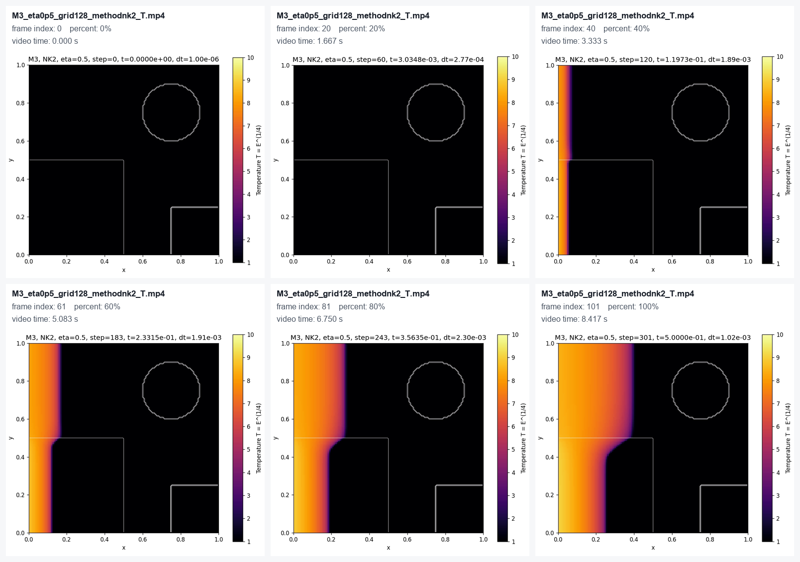

M1_eta0p1_grid64_methodnk2_T.mp4

本报告整理的是 output_mp4 中已经生成的 MP4 文件，用于展示论文默认终止时间下的扩散过程。
它不是长时间扩散或深度学习真值数据报告；长时间过程请使用 generate_full_diffusion_animation.py 生成的结果。
生成时间：2026-05-07 22:44:26；索引 CSV：mp4_animation_report.csv
| Model | eta | Grid | Method | Field | 论文默认 t_end | MP4 大小 | 拼图 |
|---|---|---|---|---|---|---|---|
| M1 | 0.10 | 64 x 64 | nk2 | T | 5 | 644.0 KB | 有 |
| M1 | 0.10 | 128 x 128 | nk2 | T | 5 | 852.8 KB | 有 |
| M1 | 0.50 | 64 x 64 | nk2 | T | 5 | 263.9 KB | 有 |
| M1 | 0.50 | 128 x 128 | nk2 | T | 5 | 323.7 KB | 有 |
| M2 | 0.10 | 64 x 64 | nk2 | T | 0.005 | 1.8 MB | 有 |
| M2 | 0.10 | 128 x 128 | nk2 | T | 0.005 | 2.3 MB | 有 |
| M2 | 0.50 | 64 x 64 | nk2 | T | 0.005 | 1.6 MB | 有 |
| M2 | 0.50 | 128 x 128 | nk2 | T | 0.005 | 2.2 MB | 有 |
| M3 | 0.10 | 64 x 64 | nk2 | T | 0.1 | 118.1 KB | 有 |
| M3 | 0.10 | 128 x 128 | nk2 | T | 0.1 | 241.3 KB | 有 |
| M3 | 0.50 | 64 x 64 | nk2 | T | 0.5 | 269.6 KB | 有 |
| M3 | 0.50 | 128 x 128 | nk2 | T | 0.5 | 485.6 KB | 有 |
M1：相对温和的非线性扩散测试。 本组动画均为论文默认终止时间 t = 5 的扩散过程。


M1：相对温和的非线性扩散测试。 本组动画均为论文默认终止时间 t = 5 的扩散过程。

M2：更强非线性的扩散测试，论文默认终止时间很短。 本组动画均为论文默认终止时间 t = 0.005 的扩散过程。


M2：更强非线性的扩散测试，论文默认终止时间很短。 本组动画均为论文默认终止时间 t = 0.005 的扩散过程。

M3：带通量限制的非线性扩散测试。 本组动画均为论文默认终止时间 t = 0.1 的扩散过程。


M3：带通量限制的非线性扩散测试。 本组动画均为论文默认终止时间 t = 0.5 的扩散过程。

